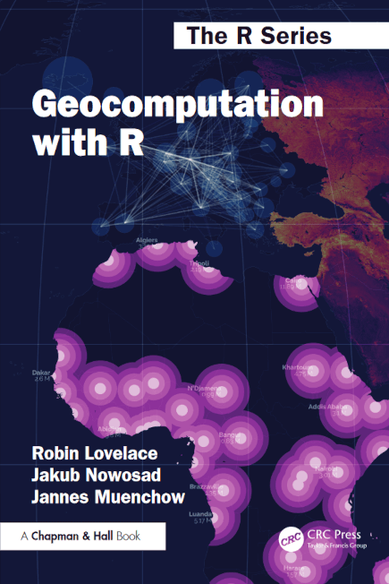

| shotX | shotY | time_remaining | player | team | made |
|---|---|---|---|---|---|
| 24.0 | 3.3 | 00:01:00 | Nick Richards | CHO | TRUE |
| 45.1 | 19.2 | 00:43:00 | Nicolas Batum | LAC | TRUE |
| 25.5 | 3.7 | 04:16:00 | Malik Monk | LAL | TRUE |
| 24.6 | 5.0 | 00:02:00 | Richaun Holmes | SAC | TRUE |
| 24.0 | 7.6 | 06:40:00 | Paul George | LAC | TRUE |
| 47.8 | 9.7 | 01:24:00 | Jarrett Allen | CLE | FALSE |
| 24.6 | 32.9 | 03:58:00 | D’Angelo Russell | MIN | FALSE |
| 11.3 | 27.9 | 04:19:00 | Malik Beasley | MIN | FALSE |
| 24.0 | 3.3 | 01:27:00 | Mason Plumlee | CHO | TRUE |
| 22.2 | 7.0 | 01:55:00 | Devin Booker | PHO | FALSE |
Environmental Data Analysis and Visualization
hello world!
Share some data
For the next five minutes, find out the following about your classmates:
What is your name?
What is your major/program of study?
Where is your favorite place to eat on or near the Tufts campus?
Share some data
You will use the data you collected to introduce someone new to the class.
Call on someone who has not yet been introduced, and tell us about them. Make sure to keep track of who on your list has been introduced.
If everyone on your list has been introduced, you’ll need to send it back to the person who called on you, so make sure to remember who that was!
Meet your teaching team
Instructor
Ben Davies
benjamin.davies@tufts.edu
Office hours: Tuesdays 3:30 – 4:30 PM
Tisch Library Data Lab or virtual
Teaching Assistant
Jenny Hertzog
jennifer.cuartas@tufts.edu
Office hours: Wednesday 3 – 4 PM
Tisch Library Data Lab
About this course
This course is designed to develop skills and knowledge needed to assemble, manage, visualize, analyze, and communicate about environmental data. Students will learn fundamental data science concepts and computational techniques needed to
access data from a variety of sources;
organize and reshape datasets to suit different purposes;
plot data to evaluate patterns;
assess the robustness and uniqueness of those patterns;
share their findings to different audiences.
About this course
Students will also explore how aesthetic and design choices contribute to the usefulness of visualizations for telling environmental stories and best practices for making data and open and accessible for public reuse.
Why use data to tell environmental stories?
ted.com
How data helps: making patterns clearer
sportingnews.com
How data helps: making patterns clearer
How data helps: making patterns clearer
How data helps: making patterns clearer

How data helps: making stories more impactful
How data helps: making stories more impactful
How data helps: making better informed decisions
How data helps: making better informed decisions
How we get there
Hadley Wickham/R For Data Science
How we get there


How we get there
| ID | Species | Sepal.Length | Sepal.Width |
|---|---|---|---|
| 1 | virginica | 6.4 | 3.2 |
| 2 | setosa | 4.8 | 3.4 |
| 3 | setosa | 4.9 | 3.0 |
| 4 | virginica | 7.9 | 3.8 |
| 5 | setosa | 5.0 | 3.0 |
| 6 | setosa | 5.1 | 3.4 |
| 7 | virginica | 6.3 | 2.9 |
| 8 | setosa | 4.6 | 3.4 |
| 9 | setosa | 4.8 | 3.4 |
| 10 | virginica | 6.4 | 3.1 |
How we get there
Why use R?
R is a versatile software platform focused on data and visualization
R is free to use
R code and data can be easily shared, modified, and reused
R has a large and active user base
Learning how to ask questions
“Beginners face a language problem: they can’t ask questions because they don’t know what the words mean, they can’t know what the words mean until they can successfully use the system, and they can’t successfully use the system because they can’t ask questions.”
-Phil Agre, How to help someone use a computer

Course assessment for ENV 170
| Assessment | Weight | Due Dates | Week Number |
|---|---|---|---|
| Lab exercises | 25% | Weekly | Weeks 1-5, 7-11 |
| Coding assignments | 30% | Varies | Weeks 7, 10, 13 |
| Visualization critique | 10% | Varies | Starting Week 5 |
| Project proposal | 5% | Fri Oct 14th | Week 7 |
| Project poster | 15% | Wed Dec 3rd | Week 14 |
| Project notebook | 15% | Tue Dec 9th | Week 15 |
What I need from you
Be respectful
Attend lectures and labs
Submit assignments on time
If there is something you don’t understand or want to know more about, say so
If you hear something you disagree with, say so
Helpful resources


Helpful resources

Helpful resources

Data Lab at Tufts